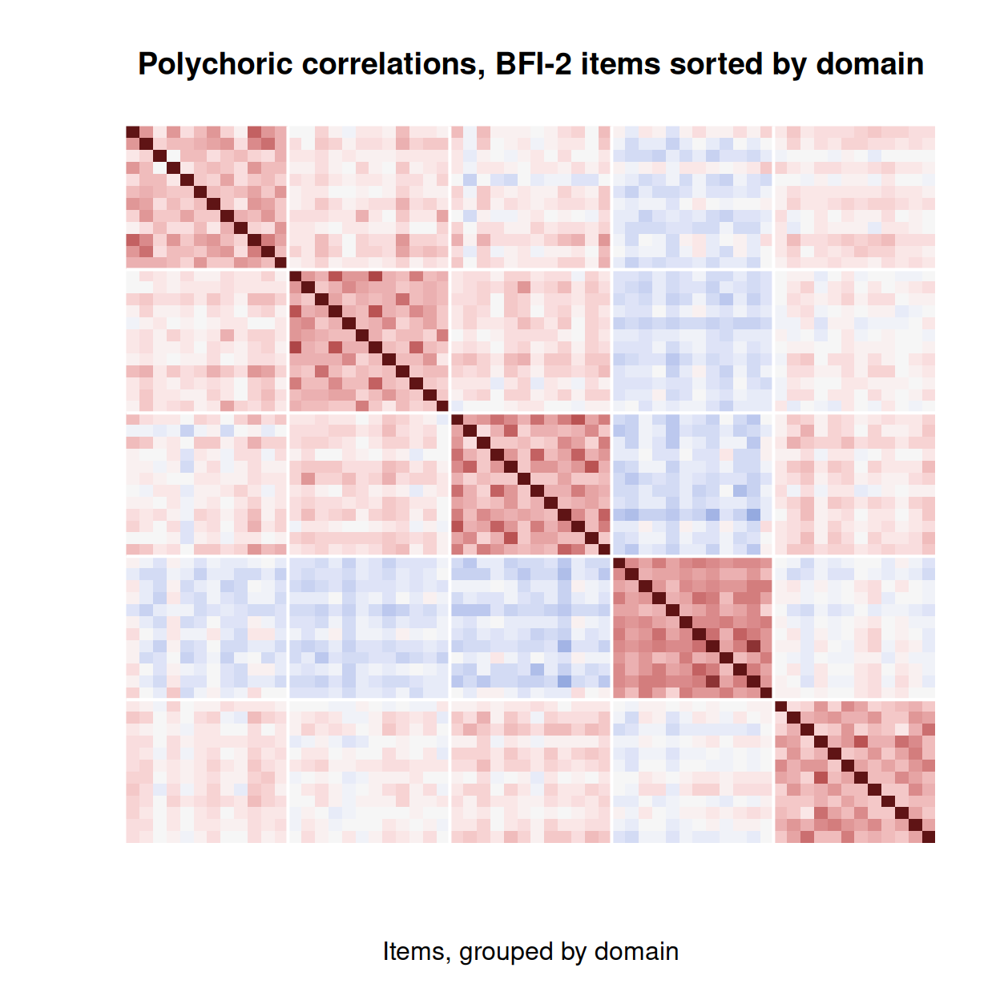
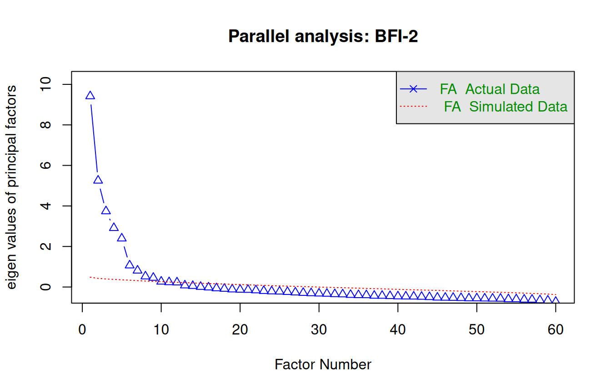

Factor analysis I: exploring dimensionality
What this is for
Classical test theory treats a test as measuring one thing. Many instruments are built to measure several: a personality inventory with five domains, a quality-of-life scale with physical and emotional subscales, a math test with separate strands for geometry and algebra. Even an instrument meant to measure one thing may not. Factor analysis is the family of tools for asking what, and how many, underlying dimensions account for the correlations among a set of items. It is one of the oldest ideas in psychometrics—Spearman proposed it in 1904 to explain why children who did well in one school subject tended to do well in others—and it remains the workhorse for studying the internal structure of a scale.
This lesson is about the exploratory version: we let the data suggest a structure. Factor analysis II takes up the confirmatory version, where we state a structure in advance and test it, and shows that factor analysis and item response theory are closer relatives than they first appear.
Goals
By the end of this lesson you should be able to:
- write down the common factor model and explain how it reproduces a correlation matrix;
- decide how many factors to extract, using eigenvalues and parallel analysis, and explain why common rules of thumb disagree;
- explain what rotation does (and what it does not do) and choose between orthogonal and oblique rotations;
- run an exploratory factor analysis on real item responses and read the output.
Core ideas
A model for correlations
The data for factor analysis is a correlation matrix. The common factor model says that each standardized item \(x_i\) is a weighted combination of a small number of common factors plus something unique to that item: \[x_i = \lambda_{i1} f_1 + \lambda_{i2} f_2 + \dots + \lambda_{im} f_m + u_i.\] The weights \(\lambda\) are the loadings. The unique part \(u_i\) bundles measurement error with anything specific to the item, and it is assumed to be uncorrelated with the factors and with the other items’ unique parts. That last assumption is doing the real work: it says that everything the items have in common runs through the factors.
With a single factor, the model makes a strong prediction. The correlation between items \(i\) and \(j\) is just the product of their loadings, \[\text{cor}(x_i, x_j) = \lambda_i \lambda_j,\] so an entire matrix of correlations is generated by one loading per item. Try it.
Try it: correlations from one factor
Note two things. The item with the weakest loading has the weakest correlations with everything. And the pattern is rigid: the ratio of item 1’s correlations with items 3 and 4 is the same as the ratio of item 2’s. If real data didn’t have that rigid pattern, one factor would not be enough—which is exactly how factor analysis detects that a second dimension is needed.
A useful quantity falls out of this: an item’s communality, \(h_i^2 = \sum_k \lambda_{ik}^2\), is the share of its variance explained by the common factors. The remainder, \(1 - h_i^2\), is its uniqueness. An item with loading 0.3 on a single factor has a communality of 0.09; more than 90% of what it does is its own business.
How many factors?
This is the question exploratory factor analysis is most often used to answer, and it has no single correct procedure. The usual starting point is the eigenvalues of the correlation matrix. Loosely, each eigenvalue says how much of the total variance (which, for \(p\) standardized items, is \(p\)) a dimension can account for, taken in decreasing order. A few large eigenvalues followed by a flat tail suggests a few factors.
Two classic rules of thumb read this list. The Kaiser rule keeps every factor with an eigenvalue above 1. The scree plot looks for the “elbow” where the eigenvalues level off. Both have a problem: even data with no factor structure produce eigenvalues above 1, purely from sampling variability, and more so in small samples. Parallel analysis fixes this by comparing the observed eigenvalues with those from random data of the same size, and keeping factors only while the observed ones are larger. Among the simple methods, it is the one I would reach for first.
Try it: eigenvalues and parallel analysis
Twelve items, generated from a known number of factors.
Push the loadings down to 0.3 with 100 people, and even parallel analysis starts to miss factors; push the sample up and the Kaiser rule keeps over-extracting a little, while parallel analysis settles on the truth. The practical lesson is that the number of factors is an estimate, with its own uncertainty, and the choice should also make substantive sense.
Rotation
Which set of loadings is the right one? The data cannot say. Once we have more than one factor, the loadings are not unique. Any rotation of the factors reproduces the correlation matrix exactly as well as any other, so the data cannot choose among them. What rotation does is pick, from this infinite family of equally good solutions, one that is easy to interpret—ideally simple structure, where each item loads strongly on one factor and near zero on the rest.
Try it: rotating two factors
Six items, with the true loadings shown when the angle is 0. Rotate the factors and watch the loadings change while the fit does not.
Rotations come in two kinds. Orthogonal rotations (varimax is the famous one) keep the factors uncorrelated. Oblique rotations (oblimin, promax, geomin) let them correlate. In psychology and education, constructs are almost always correlated with one another—anxious people tend to be less extraverted, strong readers tend to be strong at math—so forcing factors to be uncorrelated is an assumption we have no reason to make. My default is oblique; if the factors turn out to be nearly uncorrelated, the two approaches will agree anyway.
Two practical notes
Likert items are not continuous. Pearson correlations between 5-point items understate the relationship between the underlying continuous tendencies, and they are distorted when items are skewed. The standard fix is to factor-analyze polychoric correlations, which estimate the correlation between the continuous variables that the ordered categories are assumed to coarsen. We use them below. This idea—an ordered response as a coarsened continuous one—is also the bridge to item response theory; see Factor analysis II.
Factor analysis is not principal components analysis. PCA finds weighted sums of the items that capture as much of their total variance as possible; it has no unique parts and no model of measurement error. Factor analysis models only the shared variance. For summarizing data the two often look similar; for asking what constructs an instrument measures, factor analysis is the right tool.
Simulate
The code below builds a questionnaire with a known structure (by default, two correlated factors with five items each), runs parallel analysis, fits an oblique exploratory factor analysis, and prints the loadings for comparison with the truth. It runs in your browser; the first run takes a little while as psych loads.
Things to try: set loading to 0.4 or np to 100 and see whether parallel analysis still finds the right number of factors; set phi to 0.7 and ask whether two factors are still worth distinguishing; set n_factors to 3.
With these settings the estimated factor correlation comes out somewhat below the true 0.3—that is sampling variability with 400 people, and a reminder that factor correlations are estimated with less precision than loadings. Download this code.
With real data
We use bfi2_zhang_2025: responses from 1,335 university students to the 60-item Big Five Inventory-2 (BFI-2; Soto & John, 2017), which measures five broad domains of personality with 12 items each. The data come from a study by Zhang, Huang, Sun and Savalei (2025) that randomly assigned people to one of four response formats; we pool across formats here and return to that design in the problems. Download the code.
Code
library(psych)
url <- "https://redivis.com/api/v1/tables/datapages.item_response_warehouse_2:v21_0.bfi2_zhang_2025/rows?format=csv"
df <- read.csv(url)
wide <- tapply(df$resp, list(df$id, df$item), function(x) x[1])
num <- as.integer(sub("self_BFI_", "", colnames(wide)))
resp <- as.data.frame(wide[, order(num)])
resp <- resp[complete.cases(resp), ]
dim(resp) # people who answered all 60 items[1] 1199 60Code
# The BFI-2 cycles through its five domains: item 1 is Extraversion, item 2
# Agreeableness, item 3 Conscientiousness, item 4 Negative Emotionality, item 5
# Open-Mindedness, item 6 Extraversion again, and so on (Soto & John, 2017).
domain <- c("Extraversion", "Agreeableness", "Conscientiousness",
"Negative Emotionality", "Open-Mindedness")[(seq_len(60) - 1) %% 5 + 1]
table(domain)domain
Agreeableness Conscientiousness Extraversion Negative Emotionality
12 12 12 12
Open-Mindedness
12 The correlation matrix
Before fitting anything, look at the correlations with the items sorted by the domain they were written for.
Code
# Polychoric correlations treat each 1-5 response as a coarsened continuous one.
R <- polychoric(resp)$rho
by_domain <- order(domain)
image(1:60, 1:60, R[by_domain, rev(by_domain)], zlim = c(-1, 1), axes = FALSE,
col = hcl.colors(41, "Blue-Red 3"), xlab = "Items, grouped by domain", ylab = "",
main = "Polychoric correlations, BFI-2 items sorted by domain")
abline(v = seq(12.5, 48.5, 12), h = seq(12.5, 48.5, 12), col = "white", lwd = 2)
Five blocks along the diagonal, and fairly pale off-diagonal regions: this is what an instrument with five largely distinct dimensions looks like. The one band of blue belongs to Negative Emotionality (the fourth block, since the domains are sorted alphabetically), whose items correlate weakly and negatively with most of the others. (All the within-block correlations are positive because the BFI-2’s reverse-worded items arrive already reverse-keyed in these data—a point to check, never assume, when you pick up a new dataset. Compare the Mach IV in the reliability lesson.)
How many factors?
Code
set.seed(252)
pa <- fa.parallel(R, n.obs = nrow(resp), fa = "fa", n.iter = 20, plot = TRUE,
main = "Parallel analysis: BFI-2")
Parallel analysis suggests that the number of factors = 9 and the number of components = NA Code
pa$nfact[1] 9Code
sum(eigen(R)$values > 1) # the "eigenvalue greater than one" rule, for comparison[1] 12This is typical of large samples with well-developed instruments: the formal criteria find more structure than the design intended, because each domain is itself made of related facets. The five-domain structure is still the one the instrument is built to score, so that is what we fit. The choice is ours; the data inform it but do not make it.
Five factors
Code
f5 <- fa(R, nfactors = 5, n.obs = nrow(resp), rotate = "oblimin", fm = "minres")
L <- unclass(f5$loadings)
top <- apply(abs(L), 1, which.max)
table(domain, factor = colnames(L)[top]) factor
domain MR1 MR2 MR3 MR4 MR5
Agreeableness 0 0 0 0 12
Conscientiousness 0 12 0 0 0
Extraversion 0 0 0 12 0
Negative Emotionality 12 0 0 0 0
Open-Mindedness 0 0 12 0 0Code
round(f5$Phi, 2) # correlations among the rotated factors MR1 MR4 MR2 MR3 MR5
MR1 1.00 -0.18 -0.22 0.02 -0.05
MR4 -0.18 1.00 0.15 0.21 0.09
MR2 -0.22 0.15 1.00 0.10 0.15
MR3 0.02 0.21 0.10 1.00 0.20
MR5 -0.05 0.09 0.15 0.20 1.00Every one of the 60 items loads most strongly on the factor for its own domain. That is an unusually clean result for real data, and it reflects the care that went into building the BFI-2. The factor correlations are modest; the largest is between Negative Emotionality and Conscientiousness (more emotionally volatile people describe themselves as a little less organized and dependable).
Code
# Loadings for the Extraversion items on the five factors. (All are positive: the
# BFI-2's reverse-worded items arrive already reverse-keyed in these data.)
round(L[domain == "Extraversion", ], 2) MR1 MR4 MR2 MR3 MR5
self_BFI_1 -0.08 0.76 -0.03 0.02 0.14
self_BFI_6 -0.09 0.48 0.22 0.18 -0.33
self_BFI_11 -0.06 0.40 0.05 0.21 0.22
self_BFI_16 -0.02 0.76 -0.08 -0.11 -0.02
self_BFI_21 0.00 0.59 0.27 0.17 -0.19
self_BFI_26 -0.15 0.27 0.26 0.12 -0.04
self_BFI_31 -0.14 0.65 -0.02 -0.10 -0.04
self_BFI_36 -0.08 0.40 0.14 0.20 -0.07
self_BFI_41 -0.23 0.56 0.09 0.03 0.07
self_BFI_46 0.08 0.78 -0.08 -0.02 0.13
self_BFI_51 -0.01 0.47 0.28 0.18 -0.20
self_BFI_56 -0.08 0.57 0.01 0.09 0.30Within a domain, items differ a good deal. Some Extraversion items load above 0.75; one (item 26) loads below 0.3 and splits its variance with other factors. Items like that are candidates for a closer look at their wording.
Finally, the rotation point from above, on real data:
Code
# The same five factors with an orthogonal rotation: identical fit, different loadings.
f5v <- fa(R, nfactors = 5, n.obs = nrow(resp), rotate = "varimax", fm = "minres")
c(oblimin_rmsr = f5$rms, varimax_rmsr = f5v$rms)oblimin_rmsr varimax_rmsr
0.031 0.031 Identical root-mean-square residuals: the orthogonal and oblique solutions fit exactly as well, because they are the same model.
Problems
- One factor. Show that under a one-factor model with standardized items and factor, \(\text{cor}(x_i, x_j) = \lambda_i\lambda_j\) for \(i \ne j\). Then show that, for any four items, \(\text{cor}(x_1,x_3)\,\text{cor}(x_2,x_4) = \text{cor}(x_1,x_4)\,\text{cor}(x_2,x_3)\). (These “tetrad” constraints were Spearman’s original test for a single factor.)
- Reliability, revisited. In a one-factor model, what is the correlation between the sum of the items and the factor? Use your answer to explain why items with low loadings contribute little to reliability, and connect it to the proof that alpha is a lower bound in the reliability lesson. What does “tau-equivalence” mean in terms of loadings?
- Choosing the number of factors. Using the simulation above, find settings (loading, number of people) under which parallel analysis gets the number of factors wrong at least half the time across ten seeds. What does this suggest about using a single rule in small samples?
- Formats. The BFI-2 data come from four randomly assigned response formats (
itemcov_format: LikertL, ExpandedE, and two item-specific versionsISFandISL). Fit the five-factor model separately in each format. Do the same items load on the same factors? Are the loadings noticeably stronger in any format? What would a difference tell you about the formats—and why does random assignment matter for that inference? (Zhang et al., 2025, is the place to compare notes.) - A weak item. Find the three BFI-2 items with the lowest communalities in the five-factor solution. Look them up in Soto and John (2017) (the item wording is published there). Would you drop them? What might they be measuring instead?
- Challenge: PCA versus FA. Run
principal()(PCA) andfa()with five components or factors on the BFI-2. Compare the loadings. Which are systematically larger, and why?
Going further
- Fabrigar, L. R., Wegener, D. T., MacCallum, R. C., & Strahan, E. J. (1999). Evaluating the use of exploratory factor analysis in psychological research. Psychological Methods, 4(3), 272–299. Still the clearest practical guide.
- Horn, J. L. (1965). A rationale and test for the number of factors in factor analysis. Psychometrika, 30(2), 179–185. The origin of parallel analysis.
- Soto, C. J., & John, O. P. (2017). The next Big Five Inventory (BFI-2). Journal of Personality and Social Psychology, 113(1), 117–143.
- Zhang, X., Huang, M., Sun, J., & Savalei, V. (2025). Improving the measurement of the Big Five via alternative formats for the BFI-2. Journal of Personality Assessment. https://doi.org/10.1080/00223891.2025.2531187. The source of the data.
- From the IRW: how often unidimensionality holds across hundreds of datasets, and a CFA walkthrough with lavaan that previews the next lesson.
Data sources
Data from the Item Response Warehouse (each table name links to its IRW page); references from IRW biblio.
bfi2_zhang_2025: Zhang, X., Huang, M., Sun, J., & Savalei, V. (2025). Improving the measurement of the Big Five via alternative formats for the BFI-2. PubMed, 1–22. https://doi.org/10.1080/00223891.2025.2531187. Licence: CC BY 4.0.
For instructors
- Source: new material; EDUC 252 did not cover factor analysis directly (dimensionality appeared in c4 and c6, and PS6#1 fit two-factor IRT models to grit and growth-mindset items). Added after the landscape analysis in
notes/landscape-2026-09-24.md, where exploratory factor analysis appeared in 8 of 11 first-course syllabi. - Placement: after Classical test theory and reliability; a natural companion to Constructs and construct maps.
- Data: the BFI-2 item wording is published (Soto & John, 2017) but is not reproduced here; item text in the IRW carries no licence to reproduce an instrument.
- Solutions: not yet written.